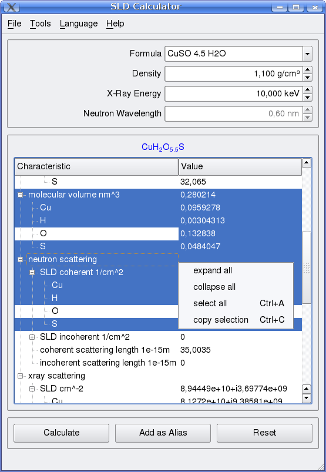
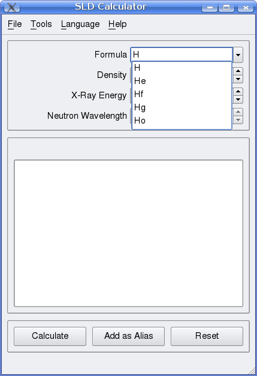
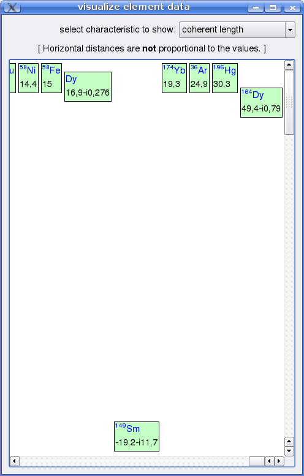

0.6
Features
- Calculation of Neutron and X-Ray scattering length densities for compounds
- Standalone executable for various platforms (Windows, Linux, Mac)
- Internationalization support (switch language at runtime)
- free as in freedom (GPL)
- Written in C++ and Qt (http://qt.nokia.com/products)
Screenshots

Convenient Export of Results
molecular volume nm^3;0,280214 Cu;0,0959278 H;0,00304313 O; S;0,0484047 neutron scattering; SLD coherent 1/cm^2;1,24917e+10 Cu;2,75433e+09 H;-2,66868e+09 S;1,01601e+09

Chemical Symbol Based Formula Completion

Visualization of Element Characteristics
Data Sources
- for a description of the backend data sources, see the Element documentation.
License and Copyright Information
| |
|
Related Programs
- the web based ChemCalc at http://www.chemcalc.org
- GChemCalc part of the Gnome Chemistry Utils at http://gchemutils.nongnu.org/#programs
- Small Angle Scattering Analysis Program SASfit at http://kur.web.psi.ch/sans1/SANSSoft/sasfit.html